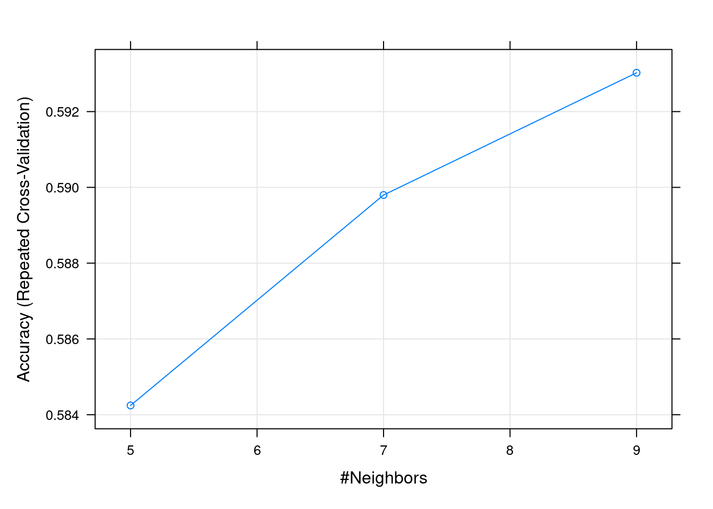
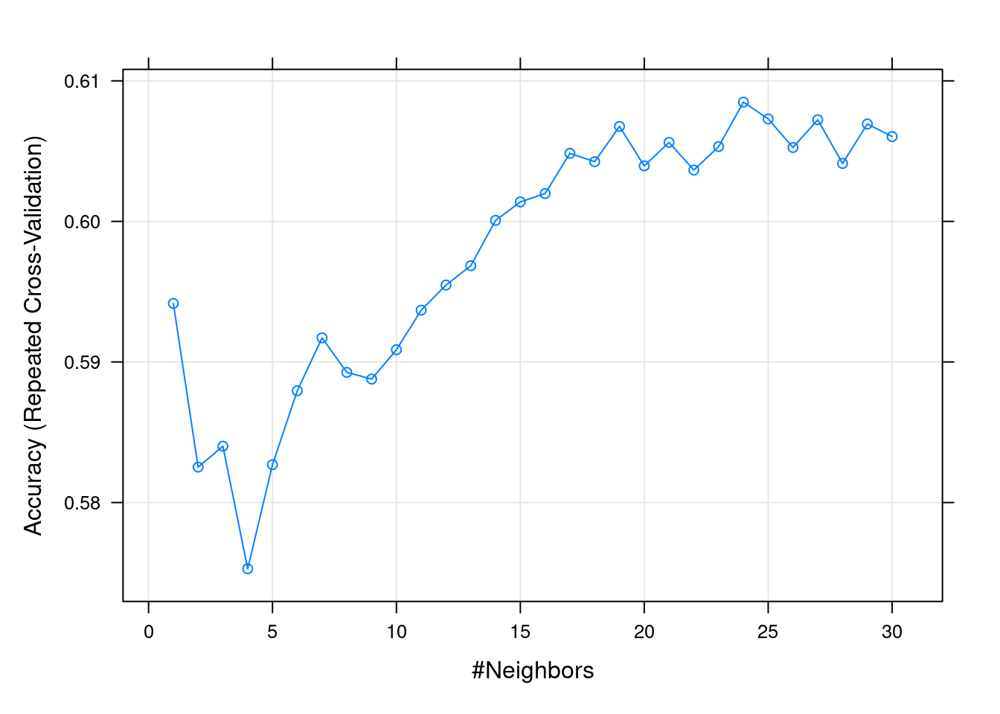
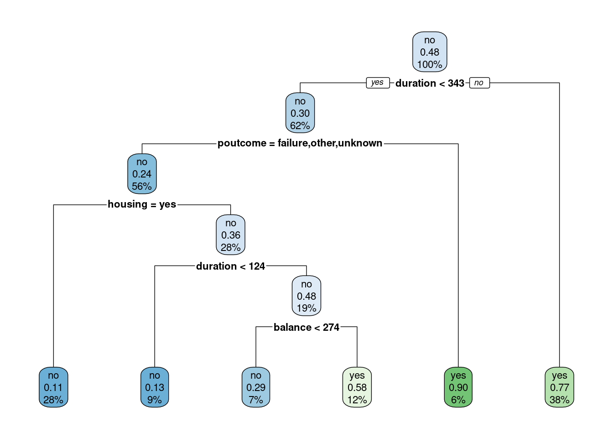
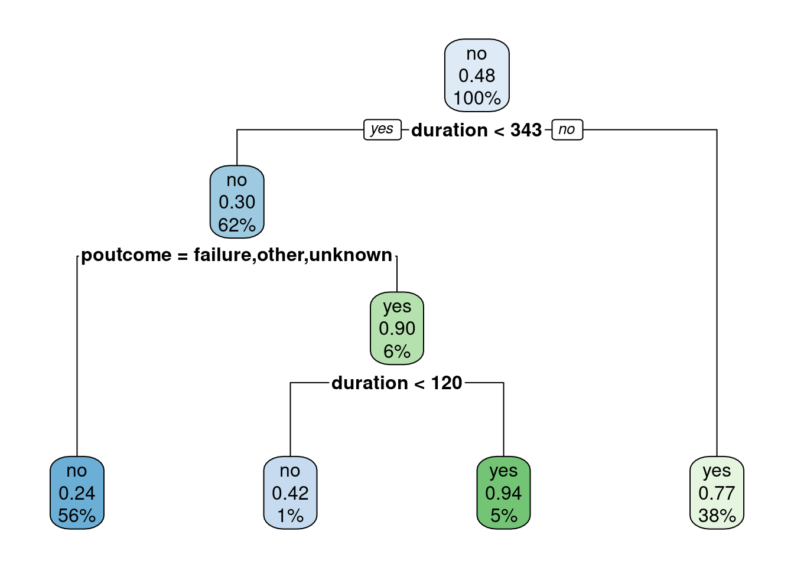
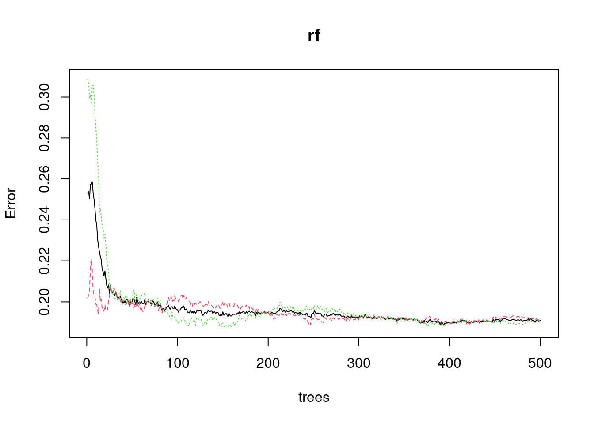
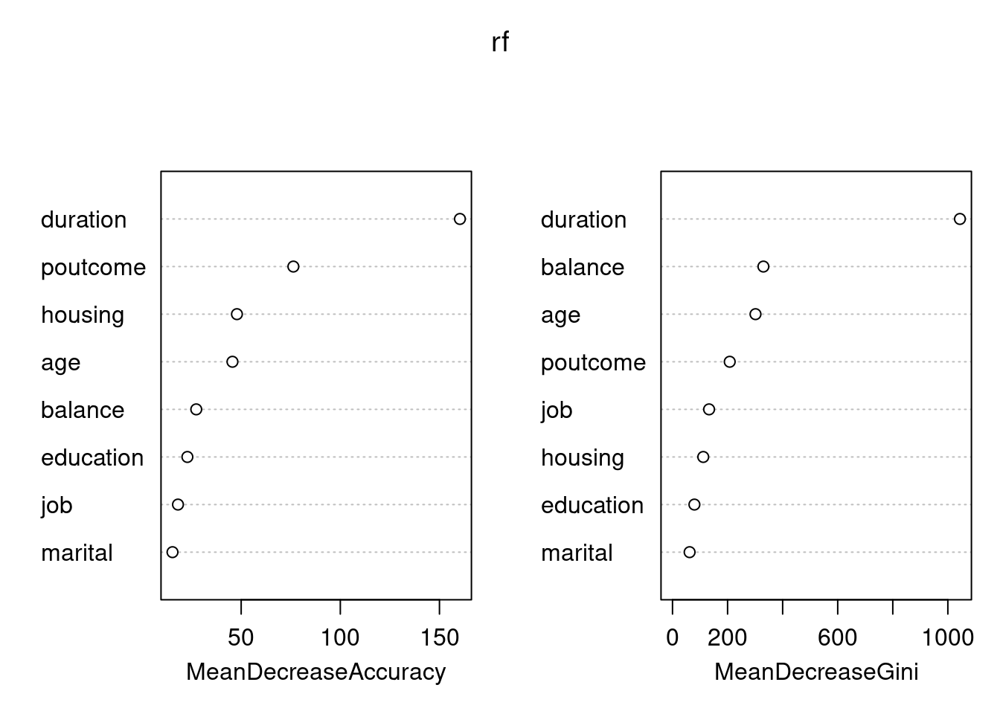
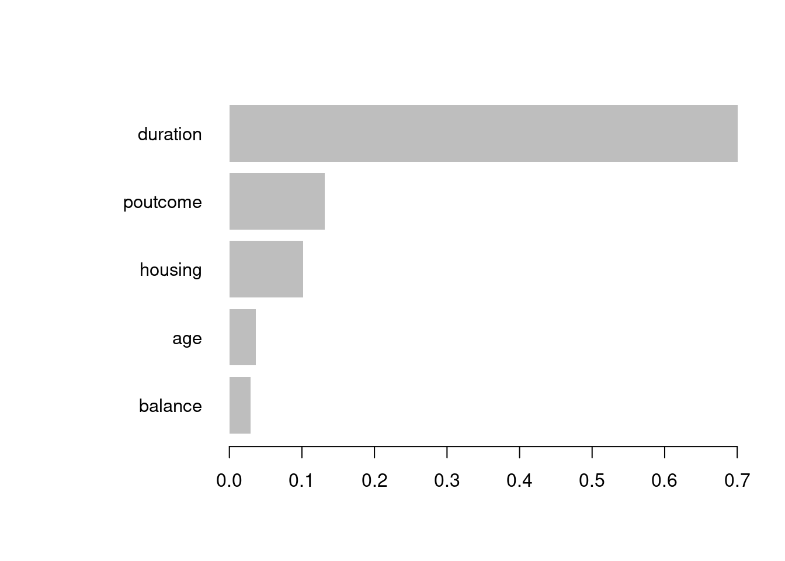

El aprendizaje automático supervisado es una disciplina fundamental en la ciencia de datos y la IA. En este enfoque, trabajamos con un conjunto de datos en el que conocemos la variable objetivo que deseamos predecir o clasificar. Esta variable objetivo contiene la información que queremos explicar o entender, y su comportamiento se basa en el resto de las variables o características del conjunto de datos. El objetivo principal del ML supervisado es desarrollar modelos que puedan capturar patrones y relaciones entre las variables con el fin de realizar predicciones precisas y clasificar observaciones.
Uno de los aspectos más destacados del ML supervisado es su capacidad para resolver problemas de clasificación, donde se asignan observaciones a diferentes categorías o clases. Por ejemplo, podemos aplicar modelos de clasificación para predecir si un correo electrónico es spam o legítimo, si un paciente tiene una enfermedad específica o no, o si una transacción bancaria es fraudulenta o no.
Además de la clasificación, el ML supervisado también se utiliza para abordar problemas de regresión, donde la variable objetivo es una cantidad continua. Esto nos permite realizar predicciones numéricas, como predecir el precio de una casa en función de sus características, pronosticar la demanda de productos en función de variables de mercado, o estimar la duración de un proyecto en función de factores diversos.
En este tema, exploraremos diversos algoritmos de clasificación supervisada que permiten extraer patrones a partir de los datos y realizar predicciones precisas en una variedad de aplicaciones. Aprenderemos cómo entrenar modelos, evaluar su rendimiento y aplicarlos a situaciones del mundo real. El ML supervisado es una herramienta poderosa que puede proporcionar conocimientos valiosos y respuestas a preguntas importantes en una amplia gama de dominios.
7.1 Modelos Lineales
Los modelos lineales representan uno de los pilares más robustos y extensamente empleados en el ámbito del aprendizaje supervisado en ML. Estos modelos constituyen la base de numerosas aplicaciones de predicción y clasificación, desempeñando un papel fundamental en la comprensión de los principios subyacentes de los algoritmos de ML.
La premisa fundamental de un modelo lineal es la suposición de que existe una relación lineal entre las variables de entrada (características) y la variable objetivo que se desea predecir. En otras palabras, se busca identificar una combinación lineal de las características ponderadas por coeficientes que se ajuste óptimamente a los datos observados. Los modelos lineales destacan por su alta interpretabilidad, lo que facilita un análisis claro sobre cómo cada característica influye en la variable objetivo.
En este capítulo exploraremos los modelos lineales, iniciando con los modelos lineales generalizados, entre los cuales el modelo de regresión lineal representa un caso específico. Además, examinaremos modelos lineales de clasificación, como la regresión logística, que se emplean para abordar problemas de clasificación.
7.1.1 Modelos lineales generalizados
Los Modelos Lineales Generalizados (GLM, de “Generalized Linear Models”) son una extensión poderosa de los modelos lineales tradicionales que amplían su aplicabilidad a una variedad de problemas más complejos en el campo del ML. Si necesitáis una referencia completa a este tipo de modelos: (McCullagh 2019).
Estos modelos son aplicables tanto a variables respuesta cuantitativas como cualitativas. De hecho, a diferencia de los modelos lineales simples, los GLM permiten manejar una amplia gama de situaciones, incluyendo variables de respuesta que no siguen una distribución normal, relaciones no lineales entre las características y la variable objetivo, y variables categóricas. Los GLM se basan en tres componentes clave:
la función de enlace,
la distribución de probabilidad,
la estructura lineal.
Llamamos \(y\) a la variable respuesta. Además, se define un predictor lineal con la combinación lineal ponderada de las \(p\) variables explicativas \(x_1, x_2, ..., x_p\):
La función de enlace conecta la media de la variable respuesta con la combinación lineal de las características (el predictor lineal), lo que permite modelar relaciones no lineales y capturar la variabilidad de los datos. La elección de la función de enlace depende del tipo de problema que se esté abordando y puede incluir funciones como la logística para problemas de clasificación o la identidad para problemas de regresión.
La estructura lineal implica que las características se ponderan por coeficientes, similar a los modelos lineales tradicionales, pero con la capacidad de ajustar relaciones no lineales y manejar múltiples predictores, incluyendo variables categóricas.
Repaso
Quizás es un buen momento para repasar los modelos lineales (regresión) que hayas visto en otras asignaturas del grado.
Definimos una función de enlace que relaciona el valor esperado de la variable respuesta dadas las variables explicativas \(E(y|x)=\mu(x)\), con el predictor lineal:
\[g(E(y|x))=\eta(x)\]
La distribución de probabilidad (componente aleatoria) describe cómo se distribuyen los datos alrededor de la media y puede adaptarse a diferentes tipos de datos, como datos binarios, Poisson, binomiales o exponenciales, entre otros. Esto brinda flexibilidad para modelar una variedad de escenarios de datos. Por ejemplo, en el caso de la conocida regresión lineal se asume que la variable respuesta sigue una distribución Normal. Mediante la componente aleatoria determinamos cómo añadir el ruido o error aleatorio a la predicción que se obtiene de la función de enlace. La tabla siguiente, adaptada de (Agresti 2015), resume los GLM:
Modelo
Componente aleatoria
Función de enlace
Tipo de variables explicativas
Regresión Lineal
Normal
Identidad
Cuantitativas
ANOVA
Normal
Identidad
Cuantitativas
ANCOVA
Normal
Identidad
Cuantitativas y Cualitativas
Regresión Logística
Binomial
Logit
Cuantitativas y Cualitativas
LogLinear
Poisson
Log
Cualitativas
Regresión de Poisson
Poisson
Log
Cuantitativas y Cualitativas
Para recordar
Los GLM no asumen una relación lineal entre la variable respuesta y las variables explicativas (o independientes), pero sí suponen una relación lineal entre la variable respuesta transformada en términos de la función de enlace y las variables explicativas.
7.1.2 Regresión Logística
El modelo de Regresión Logística es uno de los modelos lineales generalizados más empleado en la práctica por la facilidad en la interpretación de sus resultados. Es un modelo adecuado para modelar la relación entre una variable respuesta binaria (\(0\) o \(1\)) y un conjunto de variables explicativas cuantitativas y/o cualitativas.
Multiclase
Existe una versión de la Regresión Logística adaptada al caso de una variable respuesta con más de dos categorías, que recibe el nombre de Regresión Logística Politómica o Multinomial.
Asumiremos que la variables explicativas son independientes entre sí y que la probabilidad de \(1\) (a veces llamada probabilidad de éxito) solo depende de los valores de dichas variables. Si las variables explicativas no fueran independientes, podríamos añadir interacciones al modelo.
Tratamos de modelar la probabilidad condicionada, \(\mu(x)\), de que la variable respuesta sea un \(1\) dados los valores de las variables explicativas. En este caso, la componente de la variables respuesta se corresponde con una distribución binomial, \(Binomial(n,\pi)\), donde \(\pi=\mu(x)\) es la probabilidad de éxito. Así,
que modela la log odds de probabilidad de \(1\) como función de las variables explicativas. Esto es, se modela el logaritmo de la probabilidad de \(1\) dadas las variables explicativas, frente a la probabilidad de \(0\) dadas las variables explicativas.
Se emplean métodos de Máxima Verosimilitud para la estimación de los parámetros \(\beta_i, i=0,...,p\). Es posible realizar contrastes de hipótesis sobre dichos parámetros, tratando de eliminar del modelo las variables no significativas. Es decir, se contrasta si en los datos hay suficiente información contraria a la siguiente hipótesis nula, como para rechazarla: \[H_o:\beta_i=0\] La interpretación de los coeficientes se realiza mediante una razón de ventajas (“odds ratio” en inglés), tomando la exponencial de los estimadores de los parámetros del modelo.
Con los parámetros estimados, y sus desviaciones típicas, podremos hacer selección de variables, quedándonos con las más significativas (aquellas con un \(p-valor\) por debajo de un umbral).
Vamos a trabajar con el ejemplo de los bancos que se estudió en el Capítulo 3. Como primera aproximación a la regresión logística, aplicamos un modelo con una única variable explicativa. En este caso elegimos la variable housing:
#Lectura de datoslibrary(tidyverse)bank =read.csv('https://raw.githubusercontent.com/rafiag/DTI2020/main/data/bank.csv')dim(bank)
[1] 11162 17
bank=as.tibble(bank)# Parciticionamos los datosset.seed(2138)n=dim(bank)[1]indices=seq(1:n)indices.train=sample(indices,size=n*.5,replace=FALSE)indices.test=sample(indices[-indices.train],size=n*.25,replace=FALSE)indices.valid=indices[-c(indices.train,indices.test)]bank.train=bank[indices.train,]bank.test=bank[indices.test,]bank.valid=bank[indices.valid,]# Estudiamos la influencia de housing en deposittabla1=xtabs(~housing+deposit,data=bank.train)tabla1
deposit
housing no yes
no 1246 1688
yes 1662 985
chisq.test(tabla1)
Pearson's Chi-squared test with Yates' continuity correction
data: tabla1
X-squared = 229.44, df = 1, p-value < 2.2e-16
Podemos observar que existe una relación relevante entre ambas variables. El \(p-valor\) es, claramente, inferior al valor de referencia \(0.05\). Empleamos la regresión logística para cuantificar la relación:
factor.deposit <-factor(bank.train$deposit)logit1 <-glm(factor.deposit ~ housing, data = bank.train, family ="binomial")summary(logit1)
Call:
glm(formula = factor.deposit ~ housing, family = "binomial",
data = bank.train)
Deviance Residuals:
Min 1Q Median 3Q Max
-1.3088 -0.9648 -0.9648 1.0515 1.4061
Coefficients:
Estimate Std. Error z value Pr(>|z|)
(Intercept) 0.30361 0.03735 8.129 4.34e-16 ***
housingyes -0.82674 0.05488 -15.064 < 2e-16 ***
---
Signif. codes: 0 '***' 0.001 '**' 0.01 '*' 0.05 '.' 0.1 ' ' 1
(Dispersion parameter for binomial family taken to be 1)
Null deviance: 7727 on 5580 degrees of freedom
Residual deviance: 7495 on 5579 degrees of freedom
AIC: 7499
Number of Fisher Scoring iterations: 4
¿Qué vemos en la salida? En primer lugar, los 3 asteriscos (” *** “) en la fila correspondiente a la variable housing indican su alta significatividad estadística. En otras palabras, es una variable muy relacionada con la respuesta (como ya habíamos averiguado). El valor del parámetro \(\beta_1\) es de \(-0.82674\) con una error estándar de \(0.05488\). ¿Qué significa? Es complicado interpretar valores negativos en los coeficientes. Para una mayor comprensión vamos a darle la vuelta. Es decir, el valor \(-0.82674\) está asociado a”housing=yes”, de modo que el valor \(0.82674\) está asociado a “housing=no”. La interpretación se realiza en base al exponente de dicho valor tal y como sigue: \[exp(.82674)=2.29\] significa que el “riesgo” de contratar un depósito es \(2.29\) veces mayor en aquellos que no tienen casa, en relación con el mismo riesgo para aquellos que sí tienen casa en propiedad. Si hubíeramos mantenido la interpretación original (con el valor del coeficiente negativo), el resultado sería: “el riesgo de contratar un depósito es \(exp(-0.82674)=0.44\) veces menor en aquellos propietarios de su propia casa, respecto a otros clientes que no tienen casa. Como puede verse es mucho más sencillo interpretar coeficientes positivos (odds ratio mayor que \(1\)) que coeficientes negativos.
En base al valor del parámetro y a su error, podemos obtener intervalos de confianza:
Y por tanto, el riesgo de contratar un depósito es \(2.29 \in [2.05,2.54]\) veces mayor en aquellos que no tienen casa, en relación con el mismo riesgo para aquellos que sí tienen casa en propiedad.
Vamos ahora a trabajar en el caso multivariante. Como primer paso estudiemos, una a una las variables que se van a incluir en el modelo. A modo de ejemplo, consideramos las siguientes variables:
housing
marital
education
impago
saldo
# para que la categoría de referencia sea "married"bank.train$marital=relevel(as.factor(bank.train$marital),ref=2)logit2 <-glm(factor.deposit ~ marital, data = bank.train, family ="binomial")summary(logit2)
Call:
glm(formula = factor.deposit ~ marital, family = "binomial",
data = bank.train)
Deviance Residuals:
Min 1Q Median 3Q Max
-1.260 -1.076 -1.076 1.200 1.283
Coefficients:
Estimate Std. Error z value Pr(>|z|)
(Intercept) -0.24428 0.03575 -6.832 8.35e-12 ***
maritaldivorced 0.19139 0.08662 2.209 0.0271 *
maritalsingle 0.43555 0.05974 7.290 3.09e-13 ***
---
Signif. codes: 0 '***' 0.001 '**' 0.01 '*' 0.05 '.' 0.1 ' ' 1
(Dispersion parameter for binomial family taken to be 1)
Null deviance: 7727.0 on 5580 degrees of freedom
Residual deviance: 7673.4 on 5578 degrees of freedom
AIC: 7679.4
Number of Fisher Scoring iterations: 3
La variable marital es estadísticamente significativa. Los clientes solteros tienen un riesgo del orden de \(1.5\) veces mayor de deposit=yes respecto a los clientes casados. Los clientes divorciados tienen un riesgo del orden de \(1.2\) veces mayor.
logit2 <-glm(factor.deposit ~ education, data = bank.train, family ="binomial")summary(logit2)
Call:
glm(formula = factor.deposit ~ education, family = "binomial",
data = bank.train)
Deviance Residuals:
Min 1Q Median 3Q Max
-1.248 -1.106 -1.002 1.250 1.364
Coefficients:
Estimate Std. Error z value Pr(>|z|)
(Intercept) -0.42876 0.07457 -5.750 8.92e-09 ***
educationsecondary 0.25901 0.08385 3.089 0.002008 **
educationtertiary 0.59332 0.08820 6.727 1.73e-11 ***
educationunknown 0.48005 0.14220 3.376 0.000736 ***
---
Signif. codes: 0 '***' 0.001 '**' 0.01 '*' 0.05 '.' 0.1 ' ' 1
(Dispersion parameter for binomial family taken to be 1)
Null deviance: 7727 on 5580 degrees of freedom
Residual deviance: 7671 on 5577 degrees of freedom
AIC: 7679
Number of Fisher Scoring iterations: 4
La variable education es estadísticamente significativa. A medida que la educación aumenta, los clientes tienen un riesgo mayor de deposit=yes (\(1\) categoría de referencia, \(1.3\) educación secundaria, \(1.8\) educación terciaria). Los clientes con nivel de educación desconocido también tienen un riesgo positivo. Aquí la interpretación es más complicada al desconocer el nivel real de educación de estos clientes.
logit2 <-glm(factor.deposit ~ default, data = bank.train, family ="binomial")summary(logit2)
Call:
glm(formula = factor.deposit ~ default, family = "binomial",
data = bank.train)
Deviance Residuals:
Min 1Q Median 3Q Max
-1.144 -1.144 -1.144 1.211 1.382
Coefficients:
Estimate Std. Error z value Pr(>|z|)
(Intercept) -0.07800 0.02701 -2.887 0.00388 **
defaultyes -0.39200 0.21713 -1.805 0.07102 .
---
Signif. codes: 0 '***' 0.001 '**' 0.01 '*' 0.05 '.' 0.1 ' ' 1
(Dispersion parameter for binomial family taken to be 1)
Null deviance: 7727.0 on 5580 degrees of freedom
Residual deviance: 7723.7 on 5579 degrees of freedom
AIC: 7727.7
Number of Fisher Scoring iterations: 3
La variable default no es estadísticamente significativa. Su \(p-valor\) es mayor que \(0.05\). Sin embargo, está cerca de dicho valor de referencia. Eliminar esta variable del modelo en una etapa tan temprana puede ser un error.
logit2 <-glm(factor.deposit ~ balance, data = bank.train, family ="binomial")summary(logit2)
Call:
glm(formula = factor.deposit ~ balance, family = "binomial",
data = bank.train)
Deviance Residuals:
Min 1Q Median 3Q Max
-2.361 -1.118 -1.102 1.230 1.297
Coefficients:
Estimate Std. Error z value Pr(>|z|)
(Intercept) -1.667e-01 3.036e-02 -5.489 4.04e-08 ***
balance 5.621e-05 1.004e-05 5.600 2.15e-08 ***
---
Signif. codes: 0 '***' 0.001 '**' 0.01 '*' 0.05 '.' 0.1 ' ' 1
(Dispersion parameter for binomial family taken to be 1)
Null deviance: 7727.0 on 5580 degrees of freedom
Residual deviance: 7689.1 on 5579 degrees of freedom
AIC: 7693.1
Number of Fisher Scoring iterations: 3
La variable saldo es claramente significativa. Un incremento de una unidad en el saldo está asociado a un incremento de \(1.00006\) en el riesgo de depóstivo. En variables continuas es muy habitual que un incremento tan bajo (\(1\) dolar esté asociado a incrementos tan pequeños en el riesgo). Para mejorar la interpretación se suele multiplicar esta cantidad como sigue:
exp(logit2$coefficients[2]*1000)
balance
1.057816
De este modo, la interpretación sería: los clientes con \(1000\) dólares más en el salto incrementan su riesgo de depósito en \(1.06\) respecto a los que tienen \(1000\) dólares menos.
Métodos Wrapper de selección de características
En el Capítulo 4 vimos algunas técnicas de reducción de la dimensión basadas en la selección de características de acuerdo con la calidad de las mismas. Esta calidad se evalua empleando algoritmos de ML.
A continuación, ajustamos un modelo de regresión logística con todas las características significativas.
logit2 <-glm(factor.deposit ~ housing+marital+education+default+ balance, data = bank.train, family ="binomial")summary(logit2)
Call:
glm(formula = factor.deposit ~ housing + marital + education +
default + balance, family = "binomial", data = bank.train)
Deviance Residuals:
Min 1Q Median 3Q Max
-2.2899 -1.0945 -0.8051 1.1219 1.6448
Coefficients:
Estimate Std. Error z value Pr(>|z|)
(Intercept) -1.982e-01 8.389e-02 -2.362 0.01815 *
housingyes -7.770e-01 5.585e-02 -13.912 < 2e-16 ***
maritaldivorced 1.776e-01 8.901e-02 1.995 0.04604 *
maritalsingle 3.728e-01 6.211e-02 6.002 1.95e-09 ***
educationsecondary 2.475e-01 8.666e-02 2.856 0.00429 **
educationtertiary 4.323e-01 9.166e-02 4.717 2.40e-06 ***
educationunknown 3.178e-01 1.464e-01 2.170 0.03000 *
defaultyes -2.920e-01 2.222e-01 -1.314 0.18872
balance 4.495e-05 1.007e-05 4.462 8.12e-06 ***
---
Signif. codes: 0 '***' 0.001 '**' 0.01 '*' 0.05 '.' 0.1 ' ' 1
(Dispersion parameter for binomial family taken to be 1)
Null deviance: 7727.0 on 5580 degrees of freedom
Residual deviance: 7397.1 on 5572 degrees of freedom
AIC: 7415.1
Number of Fisher Scoring iterations: 4
Podemos ver como la variable default pierde significatividad estadística. Esto es normal. Al tener en consideración el efecto de otras variables, aquellas que estaban al límite de la significatividad pueden ser eliminadas. Entrenamos el modelo sin esa variable.
logit2 <-glm(factor.deposit ~ housing+marital+education+ balance, data = bank.train, family ="binomial")summary(logit2)
Call:
glm(formula = factor.deposit ~ housing + marital + education +
balance, family = "binomial", data = bank.train)
Deviance Residuals:
Min 1Q Median 3Q Max
-2.3057 -1.0920 -0.8049 1.1217 1.6233
Coefficients:
Estimate Std. Error z value Pr(>|z|)
(Intercept) -2.042e-01 8.377e-02 -2.438 0.01479 *
housingyes -7.772e-01 5.584e-02 -13.917 < 2e-16 ***
maritaldivorced 1.751e-01 8.898e-02 1.968 0.04908 *
maritalsingle 3.735e-01 6.209e-02 6.014 1.80e-09 ***
educationsecondary 2.479e-01 8.667e-02 2.861 0.00423 **
educationtertiary 4.328e-01 9.167e-02 4.721 2.35e-06 ***
educationunknown 3.151e-01 1.464e-01 2.152 0.03137 *
balance 4.582e-05 1.009e-05 4.543 5.54e-06 ***
---
Signif. codes: 0 '***' 0.001 '**' 0.01 '*' 0.05 '.' 0.1 ' ' 1
(Dispersion parameter for binomial family taken to be 1)
Null deviance: 7727.0 on 5580 degrees of freedom
Residual deviance: 7398.8 on 5573 degrees of freedom
AIC: 7414.8
Number of Fisher Scoring iterations: 4
Todas las variables del modelo son estadísticamente significativas. Si las variables fueran independientes, los coeficientes de la regresión múltiple coincidirían al 100% con los coeficientes de las regresiones simples. Por ejemplo, el coeficiente asociado a la variable housing era \(2.29\) y ahora es \(2.18\), muy similar. Podemos intuir la existencia de una pequeña correlación entre las variables del modelo.
7.1.3 Probabilidad de clase
Podemos calcular la probabilidad que ofrece el modelo para cada una de las observaciones en la muestra de entrenamiento.
Confusion Matrix and Statistics
Reference
Prediction no yes
no 1790 1078
yes 1118 1595
Accuracy : 0.6065
95% CI : (0.5936, 0.6194)
No Information Rate : 0.5211
P-Value [Acc > NIR] : <2e-16
Kappa : 0.2121
Mcnemar's Test P-Value : 0.4053
Sensitivity : 0.5967
Specificity : 0.6155
Pos Pred Value : 0.5879
Neg Pred Value : 0.6241
Prevalence : 0.4789
Detection Rate : 0.2858
Detection Prevalence : 0.4861
Balanced Accuracy : 0.6061
'Positive' Class : yes
En la salida tenemos algunas de las medidas de rendimiento estudiadas en el Capítulo 6. Sin embargo, no aparece el \(F_1-score\), media armónica de la Precisión y la Recuperación. En cualquier caso, es fácil de programar:
Este es el funcionamiento del modelo en entrenamiento, pero ¿cuál es su funcionamiento en la partición de prueba? Recuerda, si el valor es mucho menor entonces estamos sobreajustando el modelo de entrenamiento.
Vemos que el valor es muy similar al obtenido en entrenamiento. No estamos sobreajustando el modelo.
Tarea
Dejamos como labor del estudiante la tarea de mejorar la capacidad predictiva del modelo. Puedes emplear algunas de las variables que no han sido consideradas y que puedes consultar en el Capítulo 3.
Podemos calcular la curva ROC presentada en el Capítulo 6.
Y ahora, podemos plantear si este modelo es adecuado. Es decir ¿estamos satisfechos con el rendimiento del modelo? ¿Es suficientemente bueno?
7.1.4 Análisis Discriminante Lineal
El análisis discriminante lineal (Linear Discriminant Analysis, LDA)(Hastie et al. 2009), (Murphy 2012) es una técnica estadística utilizada para encontrar una combinación lineal de variables que discrimine dos o más grupos.
Se trata de un algoritmo de clasificación, es decir, la variable objetivo es categórica. Sus dos supuestos principales son que las variables explicativas (que deben ser continuas) siguen una distribución Normal y que comparten varianza.
El objetivo de LDA es construir la combinación lineal de las variables explicativas que mejor discrimina las clases. En base a dicho hiperplano separador se clasificarán las nuevas observaciones.
Para explicar mejor cómo funciona este algoritmo, comencemos recordando el teorema de Bayes en una caso de clasificación, es decir, cuando tenemos una variable objetivo \(Y\) y las variables explicativas \(\mathbf{X}\):
siendo \(P(C=1|\mathbf{X}=\mathbf{x})\) la probabilidad a posteriori, es decir, la probabilidad de la clase \(1\) dada la observación \(\mathbf{x}\). \(P(c)\) es la probabilidad a priori de la clase \(c\). \(C_n\) es el número total de clases. Nótese que \(\sum_{c=1}^{C_n}P(c) =1\). Finalmente \(f_c(\mathbf{x})\) es la función de densidad condicional de las \(\mathbf{X}\) en la clase \(c\). En el caso del LDA se asume que la densidad de cada clase es una Normal multivariante \[
f_c(\mathbf{x}) = \frac{1}{(2\pi)^{p/2}|\Sigma_k|^{1/2}}e^{-\frac{1}{2}(\mathbf{x}-\mu_k)^{t}\Sigma_k^{-1}(\mathbf{x}-\mu_k)}
\]
Además, también se asume que las clases comparten la misma matriz de varianzas covarianzas \(\Sigma_c=\Sigma, \ \forall c\).
En base a estas asunciones, comparemos las probabilidades de ambas clases:
Obtenemos una ecuación que es lineal en \(\mathbf{x}\). Es decir, la frontera de decisión entre las clases \(0\) y \(1\) es una ecuación lineal, un hiperplano en dimensión \(p\).
En la práctica, se desconocen los parámetros de la distribución Normal. Se estiman con los datos de entrenamiento:
\(\widehat{P(c)} = n_c/n\), siendo \(n_c\) el tamaño de la clase \(c\) y \(n\) el total
\(\widehat{\mu}_c\) media muestral de los elementos de la clase \(c\)
\(\widehat{\Sigma}\) varianza muestral de los elementos de la clase \(c\)
¿Cómo se lleva entonces a cabo la clasificación? Como la frontera es un hiperplano separador, se comparará a qué población está más cercano cada observación. Esto es, para clasificar una observación como perteneciente a la clase \(1\), tendrá que ocurrir que
Si, en esta ecuación, llamamos \(\mathbf{w}=\widehat{\Sigma}^{-1}(\widehat{\mu}_1 - \widehat{\mu}_0)\), podemos reescribir la expresión anterior anterior como
\[ \mathbf{x}^{t} \mathbf{w} > \frac{1}{2}(\widehat{\mu}_1 + \widehat{\mu}_0)^{t}\mathbf{w} - log(n_1/n_0) \] La frontera de decisión entre ambas clases es
\[ \mathbf{x}^{t} \mathbf{w} = \frac{1}{2}(\widehat{\mu}_1 + \widehat{\mu}_0)^{t}\mathbf{w} - log(n_1/n_0) \] que es una combinación lineal de las variables explicativas.
¿Cómo se interpreta este procedimiento? Se está proyectando la observación a clasificar y las medias de las clases en una recta y se asigna la observación a la clase cuya media sea la más cercana.
Ventajas
Simple y rápido
Eficiente cuando se cumple las hipótesis
Clasificación de observaciones en grupos determinados. LDA se utiliza comúnmente para clasificar observaciones en grupos predeterminados, lo que facilita la interpretación y la toma de decisiones.
Combinación de información para la frontera de decisión. Al considerar la información combinada de varias variables, LDA puede capturar patrones que podrían no ser evidentes al analizar cada variable por separado
Desventajas
Asume normalidad y homocedasticidad. LDA puede ser sensible a la falta de normalidad en las variables y a la diferente variabilidad en las mismas.
Sensible a outliers. LDA puede ser sensible a la presencia de valores atípicos en los datos, lo que puede afectar negativamente la calidad del modelo.
Es un clasificador lineal.Como su nombre indica, LDA es lineal y puede no funcionar bien en situaciones donde la relación entre las variables predictoras y la variable dependiente es no lineal.
Requiere cierto tamaño de muestra. Para obtener resultados confiables, LDA requiere un tamaño de muestra adecuado en cada grupo, y puede no funcionar bien con tamaños de muestra desequilibrados
7.2 k-Vecinos
El método de los \(k\) vecinos más cercanos (\(k-NN\)), abreviatura de “k nearest neighbors” en inglés, se cuenta entre los enfoques más simples y ampliamente utilizados en el campo del ML. Este método se basa en la noción de similitud (o distancia) entre observaciones.
Para recordar
La principal asunción del modelo de los \(k\) vecinos más cercanos es la existencia de un espacio de características en el cual observaciones similares se encuentran en proximidad.
A pesar de su simplicidad aparente, esta suposición plantea desafíos importantes. En primer lugar podemos plantearnos la elección adecuada del espacio de características, es decir, en la correcta selección de la métrica que definirá la similitud. No existe una fórmula mágica para determinar, a partir de un conjunto de datos dado, cuál es la métrica óptima a utilizar.
El segundo desafío se relaciona con la noción de “cercanía”. ¿Cómo definimos la cercanía entre dos observaciones? ¿Cuál es el volumen máximo del espacio dentro del cual consideramos que dos observaciones están cerca, y más allá del cual las consideramos distantes?
A pesar de estas cuestiones aparentemente simples, el método de los \(k\) vecinos más cercanos se ha demostrado efectivo en una amplia variedad de aplicaciones, tanto en clasificación como en regresión. En este apartado, exploraremos cómo funciona este algoritmo, cómo ajustar sus parámetros y cómo aplicarlo de manera efectiva en situaciones del mundo real. A pesar de su simplicidad conceptual, los \(k\) vecinos más cercanos siguen siendo una herramienta valiosa en el repertorio de ML.
El algoritmo de los \(k\) vecinos más cercanos es un sencillo método de clasificación y regresión. En primer lugar, se eligen los parámetros del modelo:
la métrica,
el número de vecinos, \(k\).
En los ejemplos siguientes, se podrá observar que es habitual realizar pruebas con diferentes configuraciones de parámetros para identificar cuáles son los más apropiados. El principio fundamental del algoritmo implica obtener los \(k\) vecinos más cercanos para cada observación en la muestra de datos. En un problema de clasificación, el algoritmo devolverá la clase que predomina entre los \(k\) vecinos, es decir, la moda de la variable objetivo. En cambio, en un problema de regresión, el algoritmo proporcionará la media de la variable respuesta de los \(k\) vecinos más cercanos.
Para determinar el valor óptimo de \(k\) en función de los datos, ejecutamos el algoritmo \(k-NN\) múltiples veces, utilizando distintos valores de \(k\), y seleccionamos aquel valor que minimice la tasa de errores, al mismo tiempo que preserva la capacidad del algoritmo para realizar predicciones precisas en datos no vistos previamente. Es importante destacar que valores muy bajos de \(k\) pueden generar inestabilidad en el algoritmo, mientras que valores extremadamente altos de \(k\) pueden aumentar el error en las predicciones. En este proceso, se busca el equilibrio adecuado que optimice el rendimiento del algoritmo en cada situación.
Ventajas
Sencillez y Facilidad de Implementación: Es uno de los algoritmos más sencillos y fáciles de entender en ML. No requiere suposiciones complejas o entrenamientos prolongados.
Versatilidad: Se puede aplicar tanto a problemas de clasificación como de regresión.
No Paramétrico: A diferencia de algunos algoritmos que asumen una distribución específica de los datos, \(k-NN\) no hace suposiciones sobre la forma de los datos, lo que lo hace adecuado para una amplia gama de situaciones.
Adaptabilidad a Datos Cambiantes: Puede adaptarse a cambios en los datos sin necesidad de volver a entrenar el modelo por completo, lo que lo hace útil en escenarios de datos en constante evolución. Ver Capítulo 9.
Interpretabilidad: Las predicciones de k-NN se basan en la observación de datos cercanos, lo que facilita la interpretación de las decisiones del modelo.
Robustez frente al ruido: Puede manejar datos con ruido, que no se adaptan a la distribución de la mayoría de los datos, sin un gran impacto en su rendimiento.
Facilidad para Multiclases: Es aplicable a problemas de clasificación con múltiples clases sin necesidad de modificaciones significativas.
Desventajas
Sensibilidad a la elección de\(k\): La elección del parámetro que determina el número de vecinos puede ser crítica. Un valor demasiado pequeño puede hacer que el modelo sea sensible al ruido en los datos y cause sobreajuste, mientras que un valor demasiado grande puede hacer que el modelo sea demasiado suave y cause subajuste.
Sensibilidad a la Elección de la Métrica de Distancia: La elección de la métrica de distancia es crucial y puede tener un impacto significativo en el rendimiento del algoritmo. No existe una métrica única que funcione para todos los problemas, y la elección de la métrica adecuada puede ser un desafío. Es muy probable que el científico de datos deba programar la métrica más adecuada para cada caso particular.
Coste computacional: En conjuntos de datos grandes, calcular las distancias entre una nueva observación y todos los puntos de datos en el conjunto de entrenamiento puede ser computacionalmente costoso y lento. Esto limita su eficiencia en aplicaciones con grandes volúmenes de datos.
Incapacidad para Capturar Relaciones Complejas: \(k-NN\) es un algoritmo simple que no puede capturar relaciones complejas entre las características, como lo harían modelos más avanzados. No es adecuado para problemas con patrones no lineales.
Problemas en Datos Desbalanceados: En problemas de clasificación con clases desequilibradas, donde una clase tiene muchas más muestras que otra, \(k-NN\) tiende a sesgarse hacia la clase mayoritaria y puede no detectar bien la clase minoritaria.
Aplicamos el algoritmo a nuestro problema de los datos bancarios.
k-Nearest Neighbors
5581 samples
4 predictor
2 classes: 'no', 'yes'
No pre-processing
Resampling: Cross-Validated (10 fold, repeated 3 times)
Summary of sample sizes: 5023, 5023, 5023, 5022, 5023, 5023, ...
Resampling results across tuning parameters:
k Accuracy Kappa
5 0.5842447 0.1655072
7 0.5897985 0.1765086
9 0.5930238 0.1835312
Accuracy was used to select the optimal model using the largest value.
The final value used for the model was k = 9.
plot(fit.knn)

Según el gráfico anterior, podríamos elegir el mejor valor de \(k\), si bien puede observarse pocas diferencias entre las diferentes opciones.
A continuación, obtenemos la predicción para el conjunto de datos de prueba e imprimimos la matriz de confusión.
Confusion Matrix and Statistics
Reference
Prediction no yes
no 900 578
yes 568 744
Accuracy : 0.5892
95% CI : (0.5707, 0.6076)
No Information Rate : 0.5262
P-Value [Acc > NIR] : 1.216e-11
Kappa : 0.1759
Mcnemar's Test P-Value : 0.7903
Sensitivity : 0.5628
Specificity : 0.6131
Pos Pred Value : 0.5671
Neg Pred Value : 0.6089
Prevalence : 0.4738
Detection Rate : 0.2667
Detection Prevalence : 0.4703
Balanced Accuracy : 0.5879
'Positive' Class : yes
Tarea
En el código anterior, ¿Porqué se calcula la media y la varianza de la variable balance?
7.3 Grid search
La “grid search” (búsqueda en cuadrícula) es una técnica comúnmente utilizada en ML para encontrar los mejores hiperparámetros para un modelo. Tal y como vimos en el Capítulo 5, los hiperparámetros son configuraciones que no se aprenden del conjunto de datos, sino que se establecen antes de entrenar el modelo. Estos hiperparámetros pueden incluir aspectos como la tasa de aprendizaje, la profundidad máxima de un árbol de decisión, el número de vecinos en el algoritmo de \(k-NN\) y otros ajustes que afectan cómo se entrena y se ajusta el modelo.
La grid search consiste en definir una “cuadrícula” de posibles valores para los hiperparámetros que se desean optimizar. Por ejemplo, si se está trabajando con un modelo de máquinas de vectores de soporte (SVM), se podría tener una cuadrícula para los hiperparámetros de la función kernel y el parámetro de regularización. Luego, se entrena y evalúa el modelo utilizando todas las combinaciones posibles de valores en la cuadrícula.
El objetivo es encontrar la combinación de hiperparámetros que produce el mejor rendimiento del modelo según una métrica específica, como precisión, exactitud, \(F1\)-score, error cuadrático medio, etc.
Para recordar
La búsqueda en cuadrícula es un enfoque sistemático y automatizado que ahorra tiempo en comparación con probar manualmente diferentes combinaciones de hiperparámetros.
Si se tiene una cuadrícula de búsqueda para dos hiperparámetros, cada uno con tres valores posibles, se probarían un total de nueve combinaciones diferentes (3x3). El proceso de grid search evaluaría el rendimiento del modelo en nueve configuraciones distintas y seleccionaría aquella que obtiene los mejores resultados según la métrica definida.
Es importante mencionar exiten otras técnicas para la selección de hiperparámetros. Otros métodos, como la búsqueda aleatoria (“random search”), la optimización bayesiana y técnicas más avanzadas, también se utilizan en la selección de hiperparámetros en función de la complejidad y los recursos (computacionales, personales, temporales, etc) disponibles para la tarea.
En el ejemplo que nos ocupa, buscamos el mejor valor del parámetro \(k\) entre \(1\) y \(30\):
k-Nearest Neighbors
5581 samples
4 predictor
2 classes: 'no', 'yes'
No pre-processing
Resampling: Cross-Validated (10 fold, repeated 3 times)
Summary of sample sizes: 5023, 5024, 5024, 5023, 5023, 5023, ...
Resampling results across tuning parameters:
k Accuracy Kappa
1 0.5941624 0.1869556
2 0.5825199 0.1634009
3 0.5840047 0.1656685
4 0.5752866 0.1478903
5 0.5826935 0.1625400
6 0.5879512 0.1727362
7 0.5917138 0.1802904
8 0.5892608 0.1756808
9 0.5887821 0.1747647
10 0.5908722 0.1789482
11 0.5936836 0.1845274
12 0.5954742 0.1880368
13 0.5968459 0.1908545
14 0.6000722 0.1972805
15 0.6013864 0.1999850
16 0.6019835 0.2010479
17 0.6048438 0.2067664
18 0.6042492 0.2055601
19 0.6067594 0.2104826
20 0.6039522 0.2049647
21 0.6056218 0.2082912
22 0.6036533 0.2040438
23 0.6053225 0.2074437
24 0.6084891 0.2139799
25 0.6072912 0.2116389
26 0.6052587 0.2074789
27 0.6072328 0.2115650
28 0.6041256 0.2050824
29 0.6069315 0.2107200
30 0.6060367 0.2089063
Accuracy was used to select the optimal model using the largest value.
The final value used for the model was k = 24.
plot(fit.knn)

Encontramos óptimo \(k= 24\), el número de instancias más cercanas que hay que recopilar para hacer una predicción óptima. Ahora, usamos el modelo ajustado para predecir la clase para nuestro conjunto de prueba, e imprimir la matriz de confusión:
Confusion Matrix and Statistics
Reference
Prediction no yes
no 1028 603
yes 440 719
Accuracy : 0.6262
95% CI : (0.6079, 0.6442)
No Information Rate : 0.5262
P-Value [Acc > NIR] : < 2.2e-16
Kappa : 0.2457
Mcnemar's Test P-Value : 5.271e-07
Sensitivity : 0.5439
Specificity : 0.7003
Pos Pred Value : 0.6204
Neg Pred Value : 0.6303
Prevalence : 0.4738
Detection Rate : 0.2577
Detection Prevalence : 0.4154
Balanced Accuracy : 0.6221
'Positive' Class : yes
Métrica de disimilaridad
Hasta ahora hemos empleado la distancia Euclídea, pero ¿es lo más adecuado en este caso? Averigua cómo modificar este hiperparámetro del modelo y estudia qué consecuencias tiene.
7.4 Árboles de Decisión
Los Árboles de Decisión (DT, de DecisionTree en inglés) son algoritmos de ML basados en la información. Este tipo de algoritmos determinan qué variables explicativas proporcionan la mayor parte de la información (ganancia de información) para medir la variable objetivo y hacen predicciones probando secuencialmente las características en orden a su información (Kelleher y Tierney 2018).
Un DT se crea mediante un proceso de particionamiento recursivo en el conjunto de variables explicativas, es decir, probando el valor de una característica y creando una rama del árbol para cada uno de sus posibles valores. Para una mejor comprensión de la estructura de un árbol, necesitamos definir los siguientes conceptos:
Nodo raíz: es el nodo origen, inicialmente todas las observaciones forman parte de este nodo.
Nodos internos: son los nodos que se crean al definir reglas sobre una variable explicativa.
Nodos hojas: son los nodos terminales del árbol.
Habitualmente, favorecemos árboles que empleen el menor número de preguntas posible, lo que significa que buscamos árboles poco profundos. La construcción de árboles con poca profundidad implica que las características más informativas, es decir, aquellas que mejor distinguen entre observaciones con diferentes valores en la variable objetivo, deben ubicarse en la parte superior del árbol. Para llevar a cabo esta tarea, es fundamental contar con una métrica formal que evalúe cuán efectivamente una característica discrimina entre los niveles de la variable objetivo.
Entropía
La entropía es una medida teórica de la “incertidumbre” contenida en un conjunto de datos, debido a la presencia de más de una posibilidad de clasificación.
La entropía es una medida de la impureza (heterogeneidad), de los datos. Desde un punto de vista formal, la entropía de un conjunto de \(N\) valores distintos que son igualmente probables es el menor número de preguntas de tipo sí/no necesarias para determinar un valor desconocido extraído de las \(N\) posibilidades:
\[Entropía=-\sum_{i=1}^N p_i log_2p_i\]
Podemos ver que la entropía, por definición, toma valores mayores o iguales a cero. Su valor máximo se alcanza cuando las observaciones se distribuyen equitativamente entre las \(N\) posibles clases. La entropía toma su valor mínimo si, y sólo si, todas las observaciones están en la misma clase. Supongamos dos clases, esto es \(N=2\). En ese caso, consideramos la probabilidad de clase \(1\) y la probabilidad de clase \(2\) (\(p_1\) y \(p_2\) respectivamente). Si todas las observaciones están en la misma clase (por ejemplo, la clase \(1\)), entonces: \(p1=1\), \(p2=0\). Y así:
El algoritmo de DT basado en ganancia de la información sería como sigue:
Calcular la entropía del conjunto de datos original. ¿Cuánta información se requiere para organizar el conjunto de datos en conjuntos puros, donde todas las observaciones dentro del conjunto pertenecen a la misma clase? Esta medida nos da una idea de lo “complejo” que es nuestro problema.
Para cada variable explicativa, se crean los conjuntos resultantes dividiendo las observaciones en el conjunto de datos utilizando un umbral para dicha variable. A continuación, se suman los valores de entropía de cada uno de estos conjuntos. Calcular la información que sigue siendo necesaria para organizar las observaciones en conjuntos puros después de dividirlos utilizando la variable explicativa.
Calcular la Ganancia de Información restando la entropía restante (paso 2) del valor de entropía original (paso 1)
Es decir, la idea es emplear los valores de las características medidas sobre las observaciones para dividir el conjunto inicial de datos en subconjuntos más pequeños repetidamente, hasta que la entropía de cada uno de los subconjuntos sea cero (o pequeña, menor que un umbral). Para cada partición, la entropía media de los subconjuntos resultantes debería ser menor que la del conjunto anterior.
En términos generales, la ganancia de información se define como la diferencia entre la entropía anterior y la nueva entropía. Por lo tanto, para cada nodo en el árbol, se elige para la división aquella variable que maximiza la ganancia de información.
Índice de Gini
Existen otras métricas posibles para medir la calidad de la división. Por ejemplo, el índice de Gini:
\[Gini=-\sum_{i=1}^N p_i (1-p_i)\]
En el caso de árboles de regresión, donde la variable objetivo es cuantitativa, se define la reducción de la varianza como la disminución total de la varianza de la variable objetivo como resultado de la división del conjunto total en dos subconjuntos.
Existen varios criterios para detener la ejecución de este algoritmo de división. En un caso extremo podemos no detenerlo hasta que el error de clasificación sea \(0\). En dicho caso posiblemente cometamos errores de sobreajuste. Es decir, seleccionar divisiones sobre las variables hasta que todas las observaciones de la muestra de entrenamiento están perfectamente clasificadas funcionará bien, pero sólo sobre las observaciones de entrenamiento. Cuando ese mismo criterio se aplique a nuevas observaciones el resultado será, probablemente, mucho peor. En ocasiones se detiene el proceso de particionado cuando la profundidad del árbol supera un umbral (esto es, cuando se han empleado un número determinado de preguntas sobre las variables explicativas), o bien cuando el número de observaciones en el nodo a dividir es menor que un valor prefijado.
Para recordar
La salida de un DT es un conjunto de reglas que se puede representar como un árbol donde cada nodo representa una decisión binaria.
A continuación aplicamos el método de DT al conjunto de datos bank.
library(rpart)library(rpart.plot)set.seed(128)df <- bank.train %>%select(age,job,housing,marital,education,duration,poutcome,balance,deposit)fit.dt <-rpart(deposit~., data = df, method ='class')rpart.plot(fit.dt, extra =106)

Como podemos observar, la interpretación del modelo de DT es muy sencilla. Todas las observaciones están en el primer nodo (el nodo raíz). Sin realizar “preguntas” sobre las variables explicativas, el nodo es de clase “no” con una probabilidad de “yes” del \(0.48\).
La primera variable de interés es la duration:
Si el valor es menor que \(343\) (este valor es aprendido por el algoritmo y puede ser difícil de interpretar) entonces la observación va hacia la rama izquierda, cayendo en un nodo dónde la probabilidad de “yes” ha disminuido a \(0.30\). En ese nodo aparecen el \(62\%\) de todas las observaciones del conjunto de entrenamiento.
Por contra, si el valor de durationes mayor que \(343\) entonces la observación va hacia la rama derecha, cayendo en un nodo dónde la probabilidad de “yes” ha aumentado a \(0.77\). En ese nodo aparecen el \(38\%\) de todas las observaciones del conjunto de entrenamiento. Además, fíjate que se trata de un nodo terminal.
Tarea
No se están teniendo en cuenta todas las variables disponibles en el conjunto de datos. El objetivo de la mayoría de los ejercicios de estos apuntes es mostrar a los alumnos cómo funcionan los métodos de ML. Si tu objetivo es obtener la más alta precisión, o el menor error, entonces te animamos a que intentes construir mejores modelos con, probablemente, más y mejores variables.
Podemos interpretar el resto de los nodos terminales del ejemplo como sigue:
Nodo
Descripción
Tamaño relativo (%)
Prob(“yes”)
1
duration < 343, poutcome=failure,other or unkonwn, housing=yes
26.0
0.11
2
duration < 124, poutcome=failure,other or unkonwn, housing=yes
9.0
0.13
3
124<=duration < 343, poutcome=failure,other or unkonwn, housing=yes, balance<274
7.0
0.29
4
124<=duration < 343, poutcome=failure,other or unkonwn, housing=yes, balance>=274
12.0
0.58
5
duration < 343, poutcome=success
6.0
0.90
6
duration>343
38.0
0.77
Usamos el modelo de DT para hacer predicciones:
# sobre la partición de entrenamientoprediction <-predict(fit.dt, df, type ='class')cf <-confusionMatrix(prediction, as.factor(df$deposit),positive="yes")print(cf)
Confusion Matrix and Statistics
Reference
Prediction no yes
no 2090 349
yes 818 2324
Accuracy : 0.7909
95% CI : (0.78, 0.8015)
No Information Rate : 0.5211
P-Value [Acc > NIR] : < 2.2e-16
Kappa : 0.584
Mcnemar's Test P-Value : < 2.2e-16
Sensitivity : 0.8694
Specificity : 0.7187
Pos Pred Value : 0.7397
Neg Pred Value : 0.8569
Prevalence : 0.4789
Detection Rate : 0.4164
Detection Prevalence : 0.5630
Balanced Accuracy : 0.7941
'Positive' Class : yes
# sobre la partición de pruebaprediction.dt <-predict(fit.dt, df.test, type ='prob')[,2]clase.pred=ifelse(prediction.dt>0.5,"yes","no")cf <-confusionMatrix(as.factor(clase.pred), as.factor(df.test$deposit),positive="yes")print(cf)
Confusion Matrix and Statistics
Reference
Prediction no yes
no 1178 381
yes 290 941
Accuracy : 0.7595
95% CI : (0.7432, 0.7753)
No Information Rate : 0.5262
P-Value [Acc > NIR] : < 2.2e-16
Kappa : 0.516
Mcnemar's Test P-Value : 0.000512
Sensitivity : 0.7118
Specificity : 0.8025
Pos Pred Value : 0.7644
Neg Pred Value : 0.7556
Prevalence : 0.4738
Detection Rate : 0.3373
Detection Prevalence : 0.4412
Balanced Accuracy : 0.7571
'Positive' Class : yes
Al igual que en otros métodos de ML, podemos ajustar los hiperparámetros del modelo. En este caso ajustamos la máxima profundidad del árbol, el mínimo número de observaciones en un nodo para poder ser particionado en dos y el mínimo número de observaciones que un nodo terminal debe tener.
control <-rpart.control(minsplit =4,minbucket =round(5/3),maxdepth =3,cp =0)tune.fit <-rpart(deposit~., data = df, method ='class', control = control)rpart.plot(tune.fit, extra =106)

El nuevo modelo presenta un rendimiento ligeramente menor que el original pero respondiendo a condiciones que antes no imponíamos.
# sobre la partición de pruebaprediction <-predict(tune.fit, df.test, type ='class')cf <-confusionMatrix(prediction, as.factor(df.test$deposit),positive="yes")print(cf)
Confusion Matrix and Statistics
Reference
Prediction no yes
no 1186 393
yes 282 929
Accuracy : 0.7581
95% CI : (0.7417, 0.7739)
No Information Rate : 0.5262
P-Value [Acc > NIR] : < 2.2e-16
Kappa : 0.5128
Mcnemar's Test P-Value : 2.297e-05
Sensitivity : 0.7027
Specificity : 0.8079
Pos Pred Value : 0.7671
Neg Pred Value : 0.7511
Prevalence : 0.4738
Detection Rate : 0.3330
Detection Prevalence : 0.4341
Balanced Accuracy : 0.7553
'Positive' Class : yes
Ventajas
Explicabilidad: Los DT son altamente interpretables, lo que significa que sus resultados se pueden entender y comunicar de manera sencilla (ver Capítulo 9). Esto los hace ideales para tomar decisiones basadas en modelos en entornos donde se necesita entender el razonamiento detrás de las predicciones.
Compatibilidad con Datos Mixtos: Pueden manejar tanto variables explicativas cuantitativas como cualitativas (categóricas). Esta versatilidad les permite trabajar con una amplia variedad de tipos de datos.
Clasificación Multiclase: Los DT se pueden extender de manera natural para la clasificación multiclase, lo que significa que pueden asignar observaciones a más de dos categorías.
Escalado de Variables no Requerido: A diferencia de algunos otros algoritmos, los DT no requieren que las variables se escalen o estandaricen antes de su uso. Esto facilita el proceso y ahorra tiempo en la preparación de datos.
Manejo de Datos Faltantes: Los árboles pueden manejar datos faltantes sin necesidad de preprocesamiento adicional. Tratan los valores faltantes como una categoría adicional y no descartan observaciones con datos faltantes.
Captura de No Linealidades: Los DT son capaces de captar relaciones no lineales entre variables, lo que es valioso cuando las relaciones entre las características y la variable objetivo son complejas y no se ajustan bien a modelos lineales.
Robustez a Valores Atípicos: Los árboles son menos sensibles a valores atípicos en los datos en comparación con algunos otros algoritmos de aprendizaje automático. Los valores atípicos no tienen un impacto tan drástico en la construcción de árboles como en modelos lineales, por ejemplo.
Eficiencia: Son relativamente eficientes en términos computacionales, especialmente para conjuntos de datos de tamaño moderado. La construcción de árboles puede realizarse de manera rápida.
Desventajas
Menos Precisión en Modelos Simples: Los DT a menudo son menos precisos que métodos más avanzados, como los bosques aleatorios o las redes neuronales, especialmente cuando se trata de problemas complejos. Su simplicidad a veces limita su capacidad para modelar relaciones sofisticadas en los datos.
Sensibilidad a Cambios en los Datos: Pequeños cambios en los datos de entrenamiento pueden resultar en DT significativamente diferentes. Esto significa que los modelos basados en árboles son menos estables y robustos en comparación con algunos otros algoritmos. Un cambio en una observación o característica puede dar como resultado un árbol completamente diferente, lo que dificulta la confianza en las predicciones.
Propensión al Sobreajuste: Los DT tienden a sobreajustarse a los datos de entrenamiento cuando se construyen demasiado profundos. Esto significa que el modelo se adapta demasiado a los datos de entrenamiento y puede no generalizar bien a nuevos datos. La elección de la profundidad óptima del árbol es crítica para evitar el sobreajuste.
Dificultad para Modelar Relaciones Lineales: A pesar de su capacidad para capturar relaciones no lineales, los DT no son ideales para modelar relaciones lineales en los datos. En tales casos, otros modelos, como la regresión lineal, pueden ser más apropiados.
Limitación en la Predicción de Valores Continuos: Los DT son adecuados para la clasificación, pero no son la mejor opción para la regresión o la predicción de valores continuos. Pueden proporcionar predicciones discretas, lo que puede ser una limitación en aplicaciones donde se requieren estimaciones precisas de valores numéricos.
Sensibilidad a Valores Atípicos: Aunque son menos sensibles a los valores atípicos que algunos otros algoritmos, los DT todavía pueden verse afectados por valores extremos en los datos, lo que puede influir en la construcción del árbol y, por lo tanto, en las predicciones.
No Son Óptimos para Datos de Alta Dimensión: Para conjuntos de datos de alta dimensión, la construcción de árboles puede volverse compleja y computacionalmente costosa. En tales casos, es posible que otros algoritmos, como las máquinas de vectores soporte (SVM) o el aprendizaje profundo, sean más apropiados.
Difícil Interpretación en Árboles Profundos: Si los árboles se construyen muy profundos, pueden volverse difíciles de interpretar y visualizar, lo que reduce su utilidad en aplicaciones que requieren explicaciones claras de las decisiones del modelo.
Si bien los DTs son una herramienta valiosa, es importante considerar estas limitaciones al seleccionar la técnica de ML adecuada para un problema específico. Las desventajas mencionadas anteriormente son algunas de las razones por las que se han desarrollado métodos más avanzados, basados en ensamblado como los Bosques Aleatorios, para abordar algunas de estas limitaciones.
7.5 Métodos de ensamblado
Los métodos de ensamblado son una potente estrategia en el campo del ML que se basa en la idea de que la unión de múltiples modelos puede mejorar significativamente el rendimiento de predicción en comparación con un solo modelo.
La unión hace la fuerza
En lugar de depender de un solo algoritmo para tomar decisiones, los métodos de ensamblado combinan las predicciones de varios modelos para obtener resultados más precisos y robustos.
Esta técnica se asemeja a la sabiduría colectiva: al reunir a un grupo diverso de personas, cada una con su conjunto único de conocimientos y perspectivas, se puede tomar una decisión más sólida y precisa. Del mismo modo, los métodos de ensamblado combinan múltiples modelos, cada uno de los cuales puede sobresalir en diferentes aspectos del problema, para lograr una predicción más precisa y confiable.
Los métodos de ensamblado se han convertido en un componente esencial en la caja de herramientas de los científicos de datos y profesionales del ML. Estas técnicas utilizan una variedad de algoritmos base, como DT, regresión logística, máquinas de vectores soporte y más, y los combinan de manera inteligente para mejorar la capacidad de generalización del modelo. En este enfoque, se pueden distinguir dos categorías principales de métodos de ensamblado:
el ensamblado de bagging
el ensamblado de boosting
7.5.1 Bagging
El ensamblado de Bagging, (de “Bootstrap Aggregating” en inglés), es una técnica de ML diseñada para mejorar la precisión y la estabilidad de los modelos predictivos. Se basa en la idea de construir múltiples modelos similares y combinar sus predicciones para obtener un resultado final más robusto y generalizable.
Damos, a continuación, una explicación detallada de cómo funciona el ensamblado de Bagging:
Bootstrap: El proceso comienza dividiendo el conjunto de datos original en múltiples subconjuntos llamados conjuntos de entrenamiento, utilizando un método llamado muestreo con reemplazo. Esto significa que, en cada conjunto de entrenamiento, algunas muestras se seleccionan más de una vez, mientras que otras pueden quedar fuera. Este proceso genera múltiples conjuntos de entrenamiento, cada uno ligeramente diferente del original.
Modelo Base: Luego, se entrena un modelo base, como un DT, regresión logística o cualquier otro algoritmo, en cada uno de estos conjuntos de entrenamiento. Cada modelo base se entrena en datos diferentes debido al muestreo con reemplazo, lo que da como resultado una serie de modelos que pueden variar en pequeñas diferencias.
Predicciones: Una vez que se han entrenado todos los modelos base, se utilizan para hacer predicciones individuales sobre un conjunto de datos de prueba.
Combinación: Finalmente, las predicciones de todos los modelos base se combinan para obtener una predicción agregada. En problemas de clasificación, esto suele implicar votación, donde se elige la clase con más votos, y en problemas de regresión, se calcula un promedio de las predicciones.
Ventajas
Reducción de la varianza: Al crear múltiples conjuntos de entrenamiento y modelos base, el ensamblado de Bagging reduce la varianza de las predicciones, lo que hace que el modelo sea más robusto y menos propenso al sobreajuste.
Mayor precisión: La combinación de múltiples modelos base suele resultar en una precisión general superior en comparación con un solo modelo.
Estabilidad: Al construir modelos ligeramente diferentes a partir de diferentes subconjuntos de datos, el ensamblado de Bagging aumenta la estabilidad y la resistencia del modelo ante datos ruidosos o atípicos.
Mayor generalización: Debido a su capacidad para reducir el sobreajuste, el ensamblado de Bagging es efectivo para problemas de alta dimensionalidad y datos con ruido.
Desventajas
Mayor complejidad computacional: Debido a la necesidad de entrenar múltiples modelos base, el Bagging puede requerir más recursos computacionales y tiempo de entrenamiento en comparación con un solo modelo. Esto es especialmente relevante cuando se trabaja con conjuntos de datos grandes o algoritmos de modelo base complejos.
Menos interpretabilidad: La combinación de múltiples modelos base dificulta la interpretación del modelo global. A diferencia de modelos individuales, como DT simples, los modelos Bagging no proporcionan una descripción sencilla de cómo se llega a una decisión o predicción.
No garantiza la mejora: Aunque el Bagging suele mejorar la precisión y reducir la varianza en comparación con un solo modelo base, no garantiza un mejor rendimiento en todos los casos. En algunos conjuntos de datos o problemas, el Bagging puede no proporcionar mejoras significativas y, en raras ocasiones, podría incluso empeorar el rendimiento.
Menos efectivo con modelos base inestables: Si se utilizan modelos base que son inherentemente inestables o propensos al sobreajuste, el Bagging puede no ser tan efectivo en mejorar su rendimiento. En tales casos, otros métodos de ensamblado, como Boosting, podrían ser más apropiados.
Limitaciones en problemas de desequilibrio de clases: En problemas de clasificación con desequilibrio de clases, el Bagging puede no abordar adecuadamente el desafío de predecir clases minoritarias. En tales situaciones, se requieren técnicas específicas, como el ajuste de pesos de clase, para abordar el desequilibrio.
El algoritmo más conocido que utiliza Bagging es el “Random Forest”, que combina múltiples DTs para lograr un modelo predictivo altamente preciso.
7.5.1.1 Random Forest
Un Bosque Aleatorio es una potente técnica de ensamblado que utiliza un conjunto de DTs para mejorar la precisión de las predicciones. En lugar de confiar en un solo árbol, se construye un bosque compuesto por numerosos árboles individuales. La singularidad de un Bosque Aleatorio radica en cómo se crean y combinan estos árboles.
Cada árbol dentro del Bosque Aleatorio no se crea a partir de todo el conjunto de datos, sino que se entrena con un subconjunto aleatorio de variables y un conjunto de observaciones seleccionadas al azar. Este proceso de muestreo aleatorio introduce diversidad en la construcción de cada árbol, lo que ayuda a mitigar la tendencia de DT a sobreajustar los datos.
Cada árbol individual en el Bosque Aleatorio genera una predicción para la variable objetivo, pero no se espera que cada árbol sea altamente efectivo por sí solo. La fortaleza del método radica en la combinación de numerosos árboles, cada uno de los cuales opera en una región diferente del espacio de características. El Bosque Aleatorio se basa en una regla de decisión que cuenta los votos de cada árbol para determinar la predicción final. En teoría, un gran número de modelos relativamente no correlacionados que funcionan como un comité superarán a cualquier modelo individual.
Una ventaja fundamental del Bosque Aleatorio es que aprovecha la sensibilidad de DTs a los datos en los que se entrenan. Cada árbol individual se entrena con una muestra aleatoria del conjunto de datos, permitiendo la selección con reemplazo. Esto da como resultado árboles diferentes en el bosque, lo que mejora la generalización del modelo.
Aplicamos este nuevo método de ML a nuestro conjunto de datos de bank.
Call:
randomForest(formula = as.factor(deposit) ~ ., data = df, importance = TRUE, proximity = TRUE)
Type of random forest: classification
Number of trees: 500
No. of variables tried at each split: 2
OOB estimate of error rate: 19.08%
Confusion matrix:
no yes class.error
no 2352 556 0.1911967
yes 509 2164 0.1904227
plot(rf)

# sobre la partición de pruebadf.test <- bank.test %>%mutate(fmarital=as.factor(marital))%>%select(age,job,housing,marital=fmarital,education,duration,poutcome,balance,deposit)df.test$deposit=as.factor(df.test$deposit)prediction.rf <-predict(rf, df.test,type="prob")[,2]clase.pred.rf=ifelse(prediction.rf>0.5,"yes","no")cf <-confusionMatrix(as.factor(clase.pred.rf), as.factor(df.test$deposit),positive="yes")print(cf)
Confusion Matrix and Statistics
Reference
Prediction no yes
no 1157 242
yes 311 1080
Accuracy : 0.8018
95% CI : (0.7865, 0.8164)
No Information Rate : 0.5262
P-Value [Acc > NIR] : < 2.2e-16
Kappa : 0.6035
Mcnemar's Test P-Value : 0.003832
Sensitivity : 0.8169
Specificity : 0.7881
Pos Pred Value : 0.7764
Neg Pred Value : 0.8270
Prevalence : 0.4738
Detection Rate : 0.3871
Detection Prevalence : 0.4986
Balanced Accuracy : 0.8025
'Positive' Class : yes
Podemos averiguar la importancia de las variables en el modelo.
Las tres primeras columnas hacen referencia a la medida MeanDecreaseAccuracy. La disminución del accuracy se mide permutando los valores del target en las muestras OOB y calculando la disminución correspondiente. Esto se hace para cada árbol y con sus muestras OOB correspondientes para obtener la media y la desviación estándar. La segunda medida es la disminución total de impurezas de nodos a partir de la división en la variable, promediada en todos los árboles.
varImpPlot(rf)

Este gráfico muestra la importancia de las variables, ordenadas de mayor a menor. En este caso particular la variable más relevante dentro del modelo es la duración de la llamada.
Además podemos obtener una visualización del funcionamiento del Bosque con la función MDSplot:
#MDSplot(rf,as.factor(df$deposit),k=3)
La función grafica las \(k\) primeras componentes principales (ver Capítulo 4) de la matriz de proximidad, que es una matriz de medidas de proximidad entre la observaciones de entrenamiento (basada en la frecuencia con que los pares de puntos de datos se encuentran en los mismos nodos terminales).
7.5.2 Boosting
El ensamblado de Boosting es una técnica de ML que se utiliza para mejorar la precisión de los modelos de clasificación o regresión. A diferencia del Bagging, que se basa en la construcción de múltiples modelos independientes y su promediación, el Boosting se centra en mejorar iterativamente un solo modelo débil (o sencillo).
El proceso de Boosting funciona de la siguiente manera:
Comienza con un modelo base (generalmente un modelo simple o débil), que se entrena en el conjunto de datos original.
Luego, se evalúa el rendimiento del modelo base. Las instancias clasificadas incorrectamente o las predicciones con errores se ponderan más fuertemente para la siguiente iteración.
En la siguiente iteración, se entrena un segundo modelo débil, pero esta vez se da más énfasis a las instancias que se clasificaron incorrectamente en la iteración anterior.
Los resultados de los modelos base se combinan ponderando sus predicciones en función de su rendimiento relativo. Los modelos que tienen un mejor rendimiento reciben más peso en la predicción final.
Este proceso de entrenamiento, evaluación y asignación de pesos se repite durante varias iteraciones (también llamadas etapas de Boosting). Cada nuevo modelo se enfoca en corregir las deficiencias del modelo anterior.
Al final de las iteraciones, se obtiene un modelo ensamblado fuerte que es capaz de mejorar significativamente la precisión de las predicciones en comparación con un solo modelo base.
Algunos algoritmos de Boosting populares incluyen AdaBoost, Gradient Boosting, y XGBoost.
Ventajas
Mejora del rendimiento: El Boosting es conocido por aumentar significativamente la precisión de las predicciones en comparación con modelos individuales o modelos base.
Reducción del sesgo: A través del proceso iterativo, el Boosting puede reducir el sesgo del modelo, lo que significa que se vuelve más capaz de ajustarse a los datos y hacer predicciones precisas.
Manejo de datos desequilibrados: Es eficaz en la clasificación de conjuntos de datos con clases desequilibradas, ya que se enfoca en las instancias mal clasificadas.
Adaptabilidad: Funciona bien con una variedad de algoritmos base, lo que brinda flexibilidad al elegir el modelo débil más adecuado.
Versatilidad: El Boosting se utiliza en problemas de clasificación y regresión, lo que lo hace adecuado para una amplia gama de aplicaciones.
Capacidad para detectar patrones complejos: Al mejorar iterativamente el modelo, el Boosting puede capturar patrones complejos en los datos y generar modelos más precisos.
Robustez: Puede manejar ruido en los datos y es menos propenso al sobreajuste en comparación con algunos otros métodos de aprendizaje automático.
Desventajas
Sensibilidad al ruido: Los modelos de Boosting pueden ser sensibles al ruido y a valores atípicos en los datos. Si el conjunto de datos contiene observaciones erróneas o extremas, el Boosting puede sobreajustarse a estos valores inusuales.
Tiempo de entrenamiento: El proceso de Boosting implica entrenar múltiples modelos base de manera secuencial, lo que puede llevar más tiempo en comparación con otros métodos de ensamblado más simples.
Menos interpretabilidad: A medida que se agregan más modelos al ensamblado, la interpretabilidad del modelo general puede disminuir. Esto hace que sea más difícil comprender y explicar las predicciones del modelo.
Necesidad de ajuste de hiperparámetros: Los modelos de Boosting tienen varios hiperparámetros que deben ajustarse adecuadamente para obtener el mejor rendimiento. Encontrar la combinación óptima de hiperparámetros puede requerir tiempo y recursos computacionales.
Potencial sobreajuste: Si no se ajustan cuidadosamente los hiperparámetros, los modelos de Boosting pueden estar sujetos al sobreajuste, especialmente si el número de iteraciones (número de modelos base) es demasiado alto.
Requisitos de recursos computacionales: Dependiendo de la implementación y la cantidad de modelos base, los modelos de Boosting pueden requerir recursos computacionales significativos, lo que podría ser un problema en sistemas con recursos limitados.
7.5.2.1 XGBoost
XGBoost, que significa “Extreme Gradient Boosting”, es un modelo de ML de tipo ensamblado que ha ganado gran popularidad en competiciones de ciencia de datos y aplicaciones prácticas debido a su alto rendimiento y eficacia en una variedad de problemas de clasificación y regresión. XGBoost es una poderosa técnica de ML que ha demostrado su eficacia en una amplia gama de aplicaciones. Su capacidad para manejar datos ruidosos, seleccionar características importantes y su velocidad de entrenamiento lo hacen valioso tanto para profesionales de datos como para científicos de datos en competiciones y proyectos del mundo real.
XGBoost es una extensión del método de Gradient Boosting, que se centra en mejorar las debilidades de dicho algoritmo. ¿Cómo funciona el método del Gradient Boosting?. Lo vemos en la siguiente figura:
Pasamos por ciclos que construyen repetidamente nuevos modelos y los combinan en un modelo de ensamblado. Empezamos el ciclo tomando un modelo existente y calculando los errores de cada observación del conjunto de datos. A continuación, construimos un nuevo modelo para predecir estos errores. Añadimos las predicciones de este modelo de predicción de errores al ensamblado de modelos.
Para hacer una predicción, sumamos las predicciones de todos los modelos anteriores. Podemos utilizar estas predicciones para calcular nuevos errores, construir el siguiente modelo y añadirlo al ensamblado.
library(purrr)library(dplyr)library(caret)library(xgboost)#convertimos los datos a numéricosdf.train <-map_df(df, function(columna) { columna %>%as.factor() %>% as.numeric %>% { . -1 }})datos <-list()datos$train <- df.traindf.test <-map_df(df.test, function(columna) { columna %>%as.factor() %>% as.numeric %>% { . -1 }})datos$test <- df.test# Convertimos los datos al formato Dmatrixdatos$train_mat <- datos$train %>%select(-deposit) %>%as.matrix() %>%xgb.DMatrix(data = ., label = datos$train$deposit)datos$test_mat <- datos$test %>%select(-deposit) %>%as.matrix() %>%xgb.DMatrix(data = ., label = datos$test$deposit)# Entrenamiento del modelodatos$modelo_01 <-xgboost(data = datos$train_mat, objective ="binary:logistic", #clasificación binarianround =10, # número máximo de iteraciones boosting max_depth=2, # número de nodos de bifurcación de los árboles de de decisión usados en el entrenamientoeta =0.3, # La tasa de aprendizaje del modelonthread =2) # El número de hilos computacionales que serán usados en el proceso de entrenamiento.
Ahora podemos examinar e interpretar nuestro modelo XGBoost. Una forma en que podemos examinar nuestro modelo es observando una representación de la combinación de todos los DTs en nuestro modelo. Dado que todos los árboles tienen la misma profundidad podemos apilarlos unos encima de otros y elegir las características que aparecen con más frecuencia en cada nodo.
# Visualización del conjunto de árboles como una única unidad xgb.plot.multi.trees(model = datos$modelo_01)
Column 2 ['No'] of item 2 is missing in item 1. Use fill=TRUE to fill with NA (NULL for list columns), or use.names=FALSE to ignore column names. use.names='check' (default from v1.12.2) emits this message and proceeds as if use.names=FALSE for backwards compatibility. See news item 5 in v1.12.2 for options to control this message.
En esta figura, la parte superior del árbol está a la izquierda y la parte inferior a la derecha. En el caso de las características, el número que aparece al lado es la “calidad”, que ayuda a indicar la importancia de la característica en todos los árboles. Una mayor calidad significa que la característica es más importante. Por tanto, podemos decir que duration es con diferencia la característica más importante en todos nuestros árboles, tanto porque está más arriba en el árbol como porque su puntuación de calidad es muy alta.
Para los nodos “hoja”, el número es el valor medio del modelo devuelto a través de todos los árboles cuando una determinada observación terminó en esa hoja. Como estamos utilizando un modelo logístico, nos devuelve diciendo que el logaritmo de probabilidades en lugar de la probabilidad. Sin embargo, podemos convertir fácilmente las probabilidades logarítmicas en probabilidad.
# convertimos log odds a probabilidadesodds_to_probs <-function(odds){return(exp(odds)/ (1+exp(odds)))}# ejemplo odds_to_probs(-1.2496)
[1] 0.2227694
Así, en los árboles en los que una observación acabó en esa hoja, la probabilidad media de que una observación fuera un “yes” en la variable deposit es del \(22\%\).
¿Y si queremos ver rápidamente qué características son las más importantes? Podemos hacerlo creando, y luego trazando, la matriz de importancia, como sigue.
# importancia sobre cada característicaimportance_matrix <-xgb.importance(model = datos$modelo_01)xgb.plot.importance(importance_matrix)

Pasamos a obtener las predicciones. El resultado es un vector de valores numéricos, cada uno representando la probabilidad de que un caso en particular pertenezca al valor \(1\) de nuestra variable objetivo. Es decir, la probabilidad de que esa observación sea un “yes”.
# Predicciones en la muestra de pruebadatos$predict_01 <-predict(datos$modelo_01, datos$test_mat)cbind(datos$predict_01 >0.5, datos$test$deposit) %>%data.frame() %>%table() %>%confusionMatrix(positive="1")
Confusion Matrix and Statistics
X2
X1 0 1
0 1188 319
1 280 1003
Accuracy : 0.7853
95% CI : (0.7696, 0.8004)
No Information Rate : 0.5262
P-Value [Acc > NIR] : <2e-16
Kappa : 0.5688
Mcnemar's Test P-Value : 0.1205
Sensitivity : 0.7587
Specificity : 0.8093
Pos Pred Value : 0.7818
Neg Pred Value : 0.7883
Prevalence : 0.4738
Detection Rate : 0.3595
Detection Prevalence : 0.4599
Balanced Accuracy : 0.7840
'Positive' Class : 1
Time consuming
La tarea que más tiempo consume al usar el modelo XGBoost es encontrar los mejores hiperparámetros para alcanzar la mayor precisión posible de un modelo.
Tarea
Queda como tarea del alumno modificar los hiperparámetros del modelo, buscando una mejora en su rendimiento
7.6 Naive Bayes
El clasificador ingenuo de Bayes (en inglés “Naïve Bayes”) es un clasificador sencillo que se basa en el conocido teorema de Bayes. A pesar de su simplicidad, los clasificadores “ingenuos” de Bayes son especialmente útiles para problemas con muchas variables de entrada, variables de entrada cuantitativas con un número muy grande de valores posibles y clasificación de texto. Es uno de los algoritmos básicos que suele aparecer en problemas de Procesamiento de Lenguaje Natural. Podrás estudiar aspectos fundamentales de Lenguaje Natural a lo largo de tus estudios de grado.
El teorema de Bayes relaciona la probabilidad condicional de dos eventos A y B. La idea es modificar nuestras creencias iniciales sobre lo que ha sucedido (a priori) proporcionalmente con la forma en que nuestras observaciones se relacionan con sus posibles causas (probabilidad inversa):
Su aplicación a un problema de clasificación es como sigue. Supongamos \(X_1,X_2,\ldots,X_n\) variables explicativas independientes dado el valor de la variable objetivo \(Y_k\). Es decir, suponemos:
\[P(X_1|X_2,\ldots,X_n,Y_k)=P(X_1|Y_k); P(X_2|X_3,\ldots,X_n,Y_k)=P(X_2|Y_k)\], etc.
De este modo, aplicando el teorema de Bayes de manera recursiva, se tiene:
Esta es la expresión de la probabilidad de un valor de la variable respuesta dado el conjunto de valores de las variables explicativas. El denominador es constante, de modo que bastará con considerar sólo el numerador para comparar las probabilidades de las diferentes clases condicionadas a los valores de las variables explicativas. Se evalúa el numerador para todos los valores de la variable objetivo y se obtienen las diferentes probabilidades de clase.
La probabilidad de clase \(P(Y_k)\) se denomina probabilidad a priori, y:
\[\prod_{j=1}^nP(X_j|Y_k) \]
es la verosimilitud. La verosimilitud mide cómo de verosímiles son las observaciones de las variables explicativas dado que se ha observado una determinada etiqueta en la variable respuesta. Si la variable \(X_j\) es cualitativa, para estimar la verosimilitud de la clase \(k\) con el predictor \(j\), se cuenta la proporción de observaciones de la muestra de entrenamiento de la clase \(k\) en cada categoría de dicha variable. Si la variable \(X_j\) es cuantitativa, habitualmente se asume una distribución Normal (aunque también se pueden usar opciones no paramétricas como histogramas).
Finalmente se predice para cada conjunto de variables explicativas la clase con mayor probabilidad de clase condicionada \(P(Y_k|X_1,\ldots,X_n)\).
Confusion Matrix and Statistics
classes 0 1
0 1166 264
1 302 1058
Accuracy : 0.7971
95% CI : (0.7817, 0.8119)
No Information Rate : 0.5262
P-Value [Acc > NIR] : <2e-16
Kappa : 0.5937
Mcnemar's Test P-Value : 0.1199
Sensitivity : 0.8003
Specificity : 0.7943
Pos Pred Value : 0.7779
Neg Pred Value : 0.8154
Prevalence : 0.4738
Detection Rate : 0.3792
Detection Prevalence : 0.4875
Balanced Accuracy : 0.7973
'Positive' Class : 1
7.7 Modelos de mezcla de Gaussianas
Los modelos de mezcla de gaussianas (GMM, por sus siglas en inglés, “Gaussian Mixture Models”) son una técnica de ML utilizada para modelar datos con estructuras complejas y distribuciones múltiples. Estos modelos se basan en la idea de que un conjunto de datos puede estar compuesto por varias distribuciones gaussianas (también conocidas como normales). En otras palabras, los GMM permiten descomponer un conjunto de datos en múltiples componentes gaussianas, cada una de las cuales describe una parte de la distribución de los datos.
Los datos en el mundo real rara vez siguen una distribución simple y unimodal (¡ninguna teoría es tan compleja como un conjunto de datos!). Los GMM abordan esta complejidad al permitir que múltiples componentes gaussianas se superpongan y se combinen para representar mejor la verdadera distribución de los datos. Esto los convierte en una herramienta efectiva para modelar datos que pueden ser una mezcla de diferentes poblaciones o grupos subyacentes.
Cada componente gaussiana representa una subdistribución de datos, y se caracteriza por su media (promedio) y desviación estándar (dispersión). En un modelo de mezcla de gaussianas, se asume que cada componente es una distribución normal.
Cada observación en el conjunto se asigna a una de las componentes gaussianas en función de la probabilidad de que pertenezca a esa componente. Esto permite una descripción detallada de cómo se distribuyen los datos entre los diferentes grupos subyacentes.
Los GMM se utilizan en una variedad de aplicaciones, como la segmentación de imágenes, la detección de anomalías, la compresión de datos, la clasificación de patrones y la generación de datos sintéticos.
La estimación de los parámetros de un GMM, es decir, las medias y desviaciones estándar de las componentes gaussianas, se realiza mediante algoritmos de optimización que buscan maximizar la probabilidad conjunta de los datos observados.
Los GMM son especialmente útiles en la detección de anomalías, ya que permiten identificar regiones en el espacio de características donde los datos son inusuales o atípicos en comparación con el modelo GMM.
Aunque los GMM son efectivos en la modelación de datos complejos, pueden ser sensibles al número de componentes elegido y a la inicialización. La selección de un número adecuado de componentes y una buena inicialización son aspectos importantes en su aplicación.
8 Comparación de modelos
Hemos aplicado una variedad de modelos (y en otras asignaturas verás nuevos modelos de ML). Podemos comparar el rendimiento de modelos de diversas maneras. Una de ellas, tal y como vimos en el Capítulo 6 es la curva ROC:
library(pROC)roc_score
Call:
roc.default(response = bank.test$deposit, predictor = predicciones, plot = TRUE, print.auc = TRUE)
Data: predicciones in 1468 controls (bank.test$deposit no) < 1322 cases (bank.test$deposit yes).
Area under the curve: 0.6411
A la vista de los resultados. ¿Qué modelo es el más adecuado? Piensa sobre ello.
Modelo óptimo vs modelo útil
En este documento hemos aplicado una serie de modelos a un conjunto de datos. Nuestro objetivo es mostrar a los estudiantes varios métodos de ML. Nuestro objetivo nunca ha sido encontrar el modelo óptimo. Es decir, no buscamos el mejor modelo, sino un modelo útil. Un modelo que proporcione información y de ella podamos extraer conocimiento.
Agresti, Alan. 2015. Foundations of linear and generalized linear models. John Wiley & Sons.
Hastie, Trevor, Robert Tibshirani, Jerome H Friedman, y Jerome H Friedman. 2009. The elements of statistical learning: data mining, inference, and prediction. Vol. 2. Springer.
Kelleher, John D, y Brendan Tierney. 2018. Data science. MIT Press.
McCullagh, Peter. 2019. Generalized linear models. Routledge.
Murphy, Kevin P. 2012. Machine learning: a probabilistic perspective. MIT press.